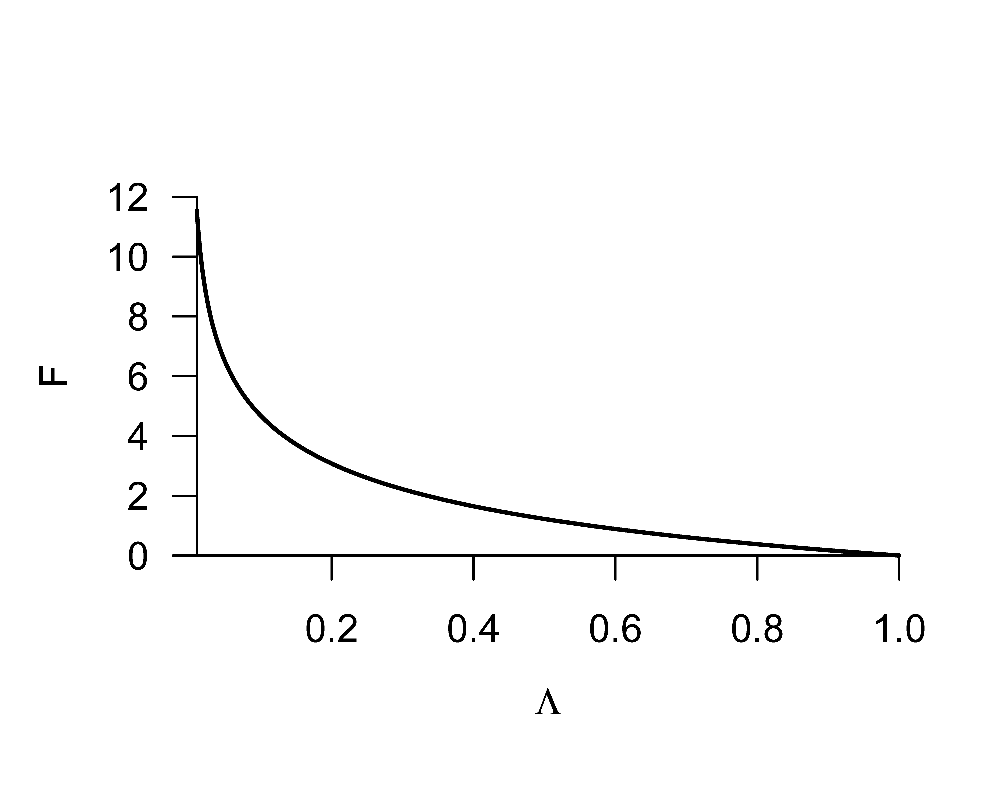
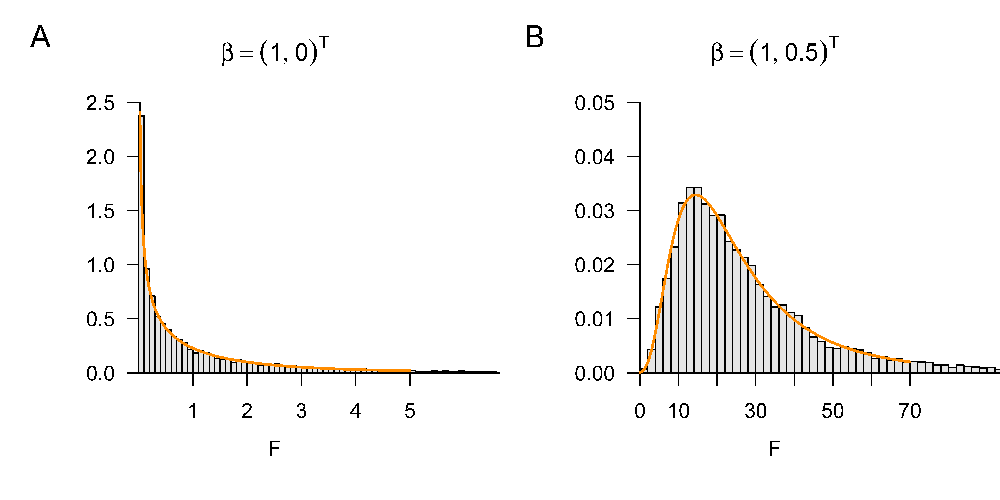

# Modellformulierung
library(MASS) # Multivariate Normalverteilung
nmod = 2 # Anzahl Modelle
n = 10 # Anzahl Datenpunkte
p = 2 # Anzahl Betaparameter
p_0 = 1 # Anzahl Betaparameter reduziertes Modell
p_1 = 1 # Anzahl zusätzlicher Betaparameter vollständiges Modell
p = p_0 + p_1 # Anzahl Betaparameter im vollständigem Modell
x = 1:n # Prädiktorwerte
X = matrix(c(rep(1,n),x), nrow = n) # Designmatrix des vollständigen Modells
X_0 = X[,1] # Designmatrix des reduzierten Modells
I_n = diag(n) # n x n Einheitsmatrix
beta = matrix(c(1,0,1,.5), nrow = 2) # wahre , aber unbekannte , Betaparameter
nscn = ncol(beta) # Anzahl wahrer, aber unbekannter, Hypothesenszenarien
sigsqr = 1 # wahrer, aber unbekannter, Varianzparameter
# Modellsimulation und Evaluierung
Eff = matrix(rep(NaN, nscn), nrow = nscn) # F-Statistiik Realisierungsarray
for(s in 1:nscn){ # Szenarieniterationen
y = mvrnorm(1, X %*%beta[,s], sigsqr*I_n) # Datenrealisierung
beta_hat_0 = solve(t(X_0)%*%X_0)%*%t(X_0)%*%y # Betaparameterschätzer reduziertes Modell
beta_hat = solve(t(X) %*%X )%*%t(X) %*%y # Betaparameterschätzer vollständiges Modell
eps_0_hat = y-X_0%*%beta_hat_0 # Residuenvektor reduziertes Modell
eps_hat = y-X%*%beta_hat # Residuenvektor vollständiges Modell
eps_0_eps_0_hat = t(eps_0_hat) %*% eps_0_hat # RQS reduziertes Modell
eps_eps_hat = t(eps_hat) %*% eps_hat # RQS vollständiges Modell
Eff[s] = (((eps_0_eps_0_hat-eps_eps_hat)/p_1)/ # F-Statistik
(eps_eps_hat/(n-p)))}30 F-Statistiken
In diesem Abschnitt führen wir F-Statistiken vor dem Hintergrund Likelihood-Quotienten-Statistik-basierter Modellvergleiche ein. Die (maximierte oder marginale) Likelihood eines Datensatzes unter einem gegebenen probabilistischen Modell als Modellvergleichskriterium heranzuziehen ist dabei ein weit verbreitetes Verfahren in der probabilistischen Datenanalyse. Im Gegensatz zu T-Statistiken kann das Ziel der Berechnung von F-Statistiken damit insbesondere sein, nicht nur Linearkombinationen von Betaparameterschätzwerten probabilistisch zu evaluieren, sondern die Modellanpassung an einen Datensatz insgesamt zu evaluieren. Die Modellvergleichskapazität von F-Statistiken ist allerdings etwas beschränkt, da sich die F-Statistik nur auf ALMs und insbesondere geschachtelte ALMs bezieht, in denen ein Modell Bestandteil eines anderen Modells ist. F-Statistiken bilden üblicherweise die Grundlage für Hypothesentests im Rahmen varianzanalytischer Verfahren. Der Einsatz von F-Statistiken ist aber per se nicht auf Varianzanalysen beschränkt, sondern kann auch bei parametrischen ALM Designs angebracht sein. Im Folgenden führen wir zunächst den Begriff der Likelihood-Quotienten-Statistik ein und betrachten dann die Definition der F-Statistik vor diesem Hintegrund. Wir schließen mit der Frequentistischen Verteilung der F-Statistik.
30.1 Likelihood-Quotienten-Statistiken
Wir definieren den Begriff der Likelihood-Quotienten-Statistik wie folgt.
Definition 30.1 (Likelihood-Quotienten-Statistik) Gegeben seien zwei Frequentistische Inferenzmodelle \[\begin{equation} \mathcal{M}_{0}:=\left(\mathcal{Y}, \mathcal{A},\left\{\mathbb{P}_{\theta_{0}}^{0} \mid \theta_{0} \in \Theta_{0}\right\}\right) \mbox{ und } \mathcal{M}_{1}:=\left(\mathcal{Y}, \mathcal{A},\left\{\mathbb{P}_{\theta_{1}}^{1} \mid \theta_{1} \in \Theta_{1}\right\}\right) \end{equation}\] mit identischem Datenraum, identischer \(\sigma\)-Algebra und potentiell distinkten Mengen von Wahrscheinlichkeitsmaßen und Parameterräumen. Sei weiterhin \(v\) ein Zufallsvektor mit Datenraum \(\mathcal{Y}\). Seien schließlich \(L_{0}^{\upsilon}\) und \(L_{1}^{\upsilon}\) die Likelihood-Funktionen von \(\mathcal{M}_{0}\) und \(\mathcal{M}_{1}\), respektive, wobei das Superskript \({ }^{\upsilon}\) jeweils an die Datenabhängigkeit der Likelihood Funktion erinnern soll. Dann wird \[\begin{equation} \Lambda:=\frac{\max _{\theta_{0} \in \Theta_{0}} L_{0}^{\upsilon}\left(\theta_{0}\right)}{\max _{\theta_{1} \in \Theta_{1}} L_{1}^{\upsilon}\left(\theta_{1}\right)} \end{equation}\] Likelihood-Quotienten-Statistik genannt.
Eine Likelihood-Quotienten-Statistik setzt die Wahrscheinlichkeitsmasse/dichte eines beobachteten Datensatzes \(y \in \mathcal{Y}\) unter zwei Frequentistischen Inferenzmodellen nach Optimierung der jeweiligen Modellparameter ins Verhältnis. Ein hoher Wert der Likelihood-Quotienten-Statistik entspricht einer höhereren Wahrscheinlichkeitsmasse/dichte des beobachteten Datensatzes \(y \in \mathcal{Y}\) unter \(\mathcal{M}_{0}\) als unter \(\mathcal{M}_{1}\) und vice versa.
Die Wahrscheinlichkeitsmassen/dichten beobachteter Daten nach Modellschätzung unter verschiedenen Modellen zu betrachten ist ein allgemeines Vorgehen zum Vergleich von Modellen. Letztlich erlaubt dieses Vorgehen, verschiedene wissenschaftliche Theorien über die Genese beobachtbarer Daten quantitativ zu vergleichen und die damit verbundene Unsicherheit zu quantifizieren. Modellvergleiche sind ein zentrales Thema in der Bayesianischen Inferenz die die Logik von Likelihood-Quotienten-Statistiken zum Beispiel unter den Begriffen der Bayes Factors oder der des Bayesian Information Criterions auf allgemeine probabilistische Modelle generalisiert. Allerdings sind, wie hier gesehen, Modellvergleiche auch im Rahmen der Frequentistischen Inferenz möglich und sinnvoll, Modellvergleiche sind also k ein Alleinstellungsmerkmal der Bayesianischen gegenüber der Frequentistischen Inferenz.
Mit dem reduzierten Modell und dem vollständigen Modell betrachten wir im Folgenden zwei spezielle Formen von \(\mathcal{M}_{0}\) und \(\mathcal{M}_{1}\), respektive, im Kontext des ALMs.
Definition 30.2 (Vollständiges und reduziertes Modell.) Für \(p>1\) mit \(p=p_{0}+p_{1}\) seien \[\begin{equation} X := \begin{pmatrix} X_{0} & X_{1} \end{pmatrix} \in \mathbb{R}^{n \times p} \mbox{ mit } X_{0} \in \mathbb{R}^{n \times p_{0}} \mbox{ und } X_{1} \in \mathbb{R}^{n \times p_{1}} \end{equation}\] sowie \[\begin{equation} \beta := \begin{pmatrix} \beta_{0} \\ \beta_{1} \end{pmatrix} \in \mathbb{R}^{p} \mbox{ mit } \beta_{0} \in \mathbb{R}^{p_{0}} \mbox{ und } \beta_{1} \in \mathbb{R}^{p_{1}} \end{equation}\] Partitionierungen einer \(n \times p\) Designmatrix und eines \(p\)-dimensionalen Betaparametervektors. Dann nennen wir \[\begin{equation} \upsilon = X\beta+\varepsilon \mbox{ mit } \varepsilon \sim N\left(0_{n}, \sigma^{2} I_{n}\right) \end{equation}\] das vollständige Modell und \[\begin{equation} \upsilon = X_{0}\beta_{0} + \varepsilon_{0} \mbox{ mit } \varepsilon_{0} \sim N\left(0_{n}, \sigma^{2} I_{n}\right) \end{equation}\] das reduzierte Modell und sprechen von einer Partitionierung eines (vollständigen) Modells.
Man sagt auch, dass das reduzierte Modell im vollständigen Modell geschachtelt (engl. nested) ist. Die Likelihood-Quotienten-Statistik beim Vergleich eines vollständigen und eines reduzierten Modells hat eine einfache Form. Diese ist der zentrale Aspekt folgenden Theorems.
Theorem 30.1 (Likelihood-Quotienten-Statistik von vollständigem und reduziertem Modell.) Für \(p=p_{0}+p_{1}, p>1\) sei eine Partitionierung eines vollständigen ALMs gegeben und es seien \(\hat{\sigma}^{2}\) und \(\hat{\sigma}_{0}^{2}\) die Maximum-Likelihood-Schätzer des Varianzparameters unter vollständigem und reduziertem Modell, respektive. Weiterhin seien die zwei parametrischen statistischen Modelle \(\mathcal{M}_{0}\) und \(\mathcal{M}_{1}\) in der Definition der Likelihood-Quotienten-Statistik durch das reduzierte Modell und das vollständige Modell gegeben. Dann gilt \[\begin{equation} \Lambda=\left(\frac{\hat{\sigma}^{2}}{\hat{\sigma}_{0}^{2}}\right)^{\frac{n}{2}} \end{equation}\]
Beweis. Wir erinnern zunächst daran, dass die Maximum-Likelihood-Schätzer des Varianzparameters durch \[\begin{equation} \hat{\sigma}^{2}=\frac{1}{n}(\upsilon-X \hat{\beta})^{T}(\upsilon-X \hat{\beta}) \mbox{ und } \hat{\sigma}_{0}^{2}=\frac{1}{n}\left(\upsilon-X_{0} \hat{\beta}_{0}\right)^{T}\left(\upsilon-X_{0} \hat{\beta}_{0}\right) \end{equation}\] respektive, gegeben sind, wobei \(\hat{\beta}\) und \(\hat{\beta}_{0}\) die Maximum-Likelihood-Schätzer der Betaparameter unter vollständigem und reduziertem Modell, respektive, bezeichnen. Weiterhin halten wir fest, dass für die Likelihood-Funktion des vollständigen Modells an der Stelle der Maximum-Likelihood-Schätzer gilt, dass \[\begin{equation} \begin{aligned} L_{1}^{y}\left(\hat{\beta}, \hat{\sigma}^{2}\right) & =(2 \pi)^{-\frac{n}{2}}\left(\hat{\sigma}^{2}\right)^{-\frac{n}{2}} \exp \left(-\frac{1}{2 \hat{\sigma}^{2}}(y-X \hat{\beta})^{T}(y-X \hat{\beta})\right) \\ & =(2 \pi)^{-\frac{n}{2}}\left(\hat{\sigma}^{2}\right)^{-\frac{n}{2}} \exp \left(-\frac{n}{2} \frac{(y-X \hat{\beta})^{T}(y-X \hat{\beta})}{(y-X \hat{\beta})^{T}(y-X \hat{\beta})}\right) \\ & =(2 \pi)^{-\frac{n}{2}}\left(\hat{\sigma}^{2}\right)^{-\frac{n}{2}} e^{-\frac{n}{2}} \end{aligned} \end{equation}\] und analog, dass für die Likelihood-Funktion des reduzierten Modells an der Stelle der Maximum-Likelihood-Schätzer gilt, dass \[\begin{equation} L_{0}^{y}\left(\hat{\beta}_{0}, \hat{\sigma}_{0}^{2}\right)=(2 \pi)^{-\frac{n}{2}}\left(\hat{\sigma}_{0}^{2}\right)^{-\frac{n}{2}} e^{-\frac{n}{2}} \end{equation}\] Damit ergibt sich dann aber \[\begin{equation} \Lambda = \frac{\max _{\theta_{0} \in \Theta_{0}} L_{0}^{\upsilon}\left(\theta_{0}\right)}{\max _{\theta_{1} \in \Theta_{1}} L_{1}^{\upsilon}\left(\theta_{1}\right)} = \frac{L_{0}^{\upsilon}\left(\hat{\beta}_{0}, \hat{\sigma}_{0}^{2}\right)}{L_{1}^{\upsilon}\left(\hat{\beta}, \hat{\sigma}^{2}\right)} = \frac{(2 \pi)^{-\frac{n}{2}}\left(\hat{\sigma}_{0}^{2}\right)^{-\frac{n}{2}} e^{-\frac{n}{2}}}{(2 \pi)^{-\frac{n}{2}}\left(\hat{\sigma}^{2}\right)^{-\frac{n}{2}}e^{-\frac{n}{2}}} =\left(\frac{\hat{\sigma}_{0}^{2}}{\hat{\sigma}^{2}}\right)^{-\frac{n}{2}}=\left(\frac{\hat{\sigma}^{2}}{\hat{\sigma}_{0}^{2}}\right)^{\frac{n}{2}} \end{equation}\]
30.2 Definition und Verteilung
Wir definieren nun die F-Statistik vor dem Hintegrund eines vollständigen und eines reduzierten Modells.
Definition 30.3 (F-Statistik) Für \(X \in \mathbb{R}^{n \times p}, \beta \in \mathbb{R}^{p}\) und \(\sigma^{2}>0\) sei ein ALM der Form \[\begin{equation} \upsilon = X\beta+\varepsilon \mbox{ mit } \varepsilon \sim N\left(0_{n}, \sigma^{2} I_{n}\right) \end{equation}\] mit der Partitionierung \[\begin{equation} X=\begin{pmatrix} X_{0} & X_{1} \end{pmatrix}, X_{0} \in \mathbb{R}^{n \times p_{0}}, X_{1} \in \mathbb{R}^{n \times p_{1}}, \mbox{ und } \beta:=\begin{pmatrix} \beta_{0} \\ \beta_{1} \end{pmatrix}, \beta_{0} \in \mathbb{R}^{p_{0}}, \beta_{1} \in \mathbb{R}^{p_{1}} \end{equation}\] mit \(p=p_{0}+p_{1}\) gegeben. Weiterhin seien mit \[\begin{equation} \hat{\beta}_{0} :=\left(X_{0}^{T} X_{0}\right)^{-1} X_{0}^{T}\upsilon \mbox{ und } \hat{\beta}:=\left(X^{T} X\right)^{-1}X^{T}\upsilon \end{equation}\] die Residuenvektoren \[\begin{equation} \hat{\varepsilon}_{0}:=\upsilon-X_{0} \hat{\beta}_{0} \mbox{ und } \hat{\varepsilon}:=\upsilon-X \hat{\beta} \end{equation}\] definiert. Dann ist die F-Statistik definiert als \[\begin{equation} F:=\frac{\left(\hat{\varepsilon}_{0}^{T} \hat{\varepsilon}_{0}-\hat{\varepsilon}^{T} \hat{\varepsilon}\right) / p_{1}}{\hat{\varepsilon}^{T} \hat{\varepsilon} /(n-p)} \end{equation}\]
Der Zähler der F-Statistik \[\begin{equation} \frac{\hat{\varepsilon}_{0}^{T} \hat{\varepsilon}_{0}-\hat{\varepsilon}^{T} \hat{\varepsilon}}{p_{1}} \end{equation}\] misst, inwieweit die \(p_{1}\) Regressoren in \(X_{1}\) die Residualquadratsumme reduzieren und zwar im Verhältnis zur Anzahl dieser Regressoren. Das heißt, dass bei gleicher Größe der Residualquadratsummenreduktion (und gleichem Nenner) ein größerer \(F\) Wert resultiert, wenn diese durch weniger zusätzliche Regressoren resultiert, also \(p_{1}\) klein ist (und vice versa). Im Sinne der Anzahl der Spalten von \(X\) und der entsprechenden Komponenten von \(\beta\) favorisiert die \(F\)-Statistik also weniger “komplexe” Modelle.
Für den Nenner der F-Statistik gilt \[\begin{equation} \frac{\hat{\varepsilon}^{T} \hat{\varepsilon}}{n-p}=\hat{\sigma}^{2} \end{equation}\] wobei \(\hat{\sigma}^{2}\) hier der aufgrund des vollständigen Modells geschätzte Schätzer von \(\sigma^{2}\) ist. Werden die Daten tatsächlich unter dem reduzierten Modell generiert, so kann das vollständige Modell dies durch \(\widehat{\beta}_{2} \approx 0_{p_{1}}\) abbilden und erreicht eine ähnliche \(\sigma^{2}\) Schätzung wie das reduzierte Modell. Werden die Daten de-facto unter dem vollständigem Modell generiert, so ist \(\hat{\varepsilon}^{T} \hat{\varepsilon} /(n-p)\) ein besserer Schätzer von \(\sigma^{2}\) als \(\hat{\varepsilon}_{0}^{T} \hat{\varepsilon}_{0} /(n-p)\), da sich für diesen die Datenvariabilität, die nicht durch die \(p_{0}\) Regressoren in \(X_{0}\) erklärt wird, in der Schätzung von \(\sigma^{2}\) widerspiegeln würde. Der Nenner der F-Statistik ist also in beiden Fällen der sinnvollere Schätzer von \(\sigma^{2}\).
Zusammengenommen misst die F-Statistik also die Residualquadratsummenreduktion durch die \(p_{1}\) Regressoren in \(X_{1}\) gegenüber den \(p_{0}\) Regressoren in \(X_{0}\) pro Datenvariabilitäts \(\left(\sigma^{2}\right)\) - und Regressor \(\left(p_{1}\right)\)-Einheit.
Beispiel (1) Einfache lineare Regression
Exemplarisch evaluiert untenstehender R Code die F-Statistik im Kontext folgender Partitionierung des Modells der einfachen linearen Regression \[\begin{equation} X=\begin{pmatrix} X_{0} & X_{1} \end{pmatrix}, X_{0}:=1_{n}, X_{1}:=\left(x_{1}, \ldots, x_{n}\right)^{T}, \beta:=\begin{pmatrix} \beta_{0} \\ \beta_{1} \end{pmatrix} \end{equation}\] und zwar einmal für den Fall, dass \(\beta=(1,0)^{T}\), also dass das reduzierte Modell das wahre, aber unbekannte, datenerzeugende Modell ist und einmal für den Fall, dass \(\beta=(1,0.5)^{T}\), also dass das vollständige Modell das wahre, aber unbekannte, datenerzeugende Modell ist. Im Sinne obiger Diskussion ergibt sich im ersten Fall eine F-Statistik nahe Null, im zweiten Fall dagegen eine hohe F-Statistik.
F-Statistik für beta_1 = 0_{p_1}: 0.05464374
F-Statistik für beta_1 != 0_{p_1}: 19.5133Die Likelihood-Quotienten-Statistik und die F-Statistik von vollständigem und reduziertem Modell sind ineinander überführbar. Dies ist die zentrale Aussage folgenden Theorems.
Theorem 30.2 (F-Statistik und Likelihood-Quotienten-Statistik.) Es sei die Partitionierung eines ALMs in ein vollständiges und ein reduziertes Modell gegeben und \(F\) und \(\Lambda\) seien die entsprechenden F- und Likelihood-Quotienten-Statistiken. Dann gilt \[\begin{equation} F=\frac{n-p}{p_{1}}\left(\Lambda^{-\frac{2}{n}}-1\right). \end{equation}\]
Beweis. Wir erinnern zunächst daran, dass die Maximum-Likelihood Schätzer des Varianzparameters durch \[\begin{equation} \hat{\sigma}^{2} = \frac{1}{n}(\upsilon - X \hat{\beta})^{T}(\upsilon-X \hat{\beta}) = \frac{\hat{\varepsilon}^{T} \hat{\varepsilon}}{n} \text { und } \hat{\sigma}_{0}^{2} = \frac{1}{n}\left(\upsilon-X_{0} \hat{\beta}_{0}\right)^{T}\left(\upsilon-X_{0} \hat{\beta}_{0}\right) = \frac{\hat{\varepsilon}_{0}^{T} \hat{\varepsilon}_{0}}{n} \end{equation}\] gegeben sind. Mit der Definition der F-Statistik und der Form der Likelihood-Quotienten-Statistik für den Vergleich von reduziertem und vollständigem Modell ergibt sich dann \[\begin{align} \begin{split} F & =\frac{\left(\hat{\varepsilon}_{0}^{T} \hat{\varepsilon}_{0}-\hat{\varepsilon}^{T} \hat{\varepsilon}\right) / p_{1}}{\hat{\varepsilon}^{T} \hat{\varepsilon} /(n-p)} \\ & =\frac{n\left(\hat{\sigma}_{0}^{2}-\hat{\sigma}^{2}\right) / p_{1}}{n \hat{\sigma}^{2} /(n-p)} \\ & =\frac{n-p}{p_{1}} \frac{\hat{\sigma}_{0}^{2}-\hat{\sigma}^{2}}{\hat{\sigma}^{2}} \\ & =\frac{n-p}{p_{1}}\left(\frac{\hat{\sigma}_{0}^{2}}{\hat{\sigma}^{2}}-\frac{\hat{\sigma}^{2}}{\hat{\sigma}^{2}}\right) \\ & =\frac{n-p}{p_{1}}\left(\Lambda^{-\frac{2}{n}}-1\right). \end{split} \end{align}\]
Zwischen der F-Statistik und der Likelihood-Quotienten-Statistik besteht also ein nichtlinearer, reziproker Zusammenhang, den wir für \(n=12, p=2\) und \(p_{1}=1\) in ?fig-f-lambda visualisieren. Man beachte, dass für \(\Lambda=1\) gilt, dass \(F=0\). Ein Wert von \(F=0\) impliziert also, dass das reduzierte Modell gegenüber dem vollständigen Modell im Lichte eines beobachteten Datensatzes die gleiche Plausibilität besitzt.

Wir dokumentieren die Frequentistische Verteilung der F-Statistik in folgendem Theorem, auf dessen Beweis wir verzichten.
Theorem 30.3 (F-Statistik) Für \(X \in \mathbb{R}^{n \times p}, \beta \in \mathbb{R}^{p}\) und \(\sigma^{2}>0\) sei ein ALM der Form \[\begin{equation} \upsilon = X\beta+\varepsilon \mbox{ mit } \varepsilon \sim N\left(0_{n}, \sigma^{2} I_{n}\right) \end{equation}\] mit der Partitionierung \[\begin{equation} X = \begin{pmatrix} X_{0} & X_{1} \end{pmatrix}, X_{0} \in \mathbb{R}^{n \times p_{0}}, X_{1} \in \mathbb{R}^{n \times p_{1}}, \mbox{ und } \beta := \begin{pmatrix} \beta_{0} \\ \beta_{1} \end{pmatrix}, \beta_{0} \in \mathbb{R}^{p_{0}}, \beta_{1} \in \mathbb{R}^{p_{1}} \end{equation}\] mit \(p=p_{0}+p_{1}\) gegeben. Schließlich sei \[\begin{equation} c := \begin{pmatrix} 0_{p_{0}} \\ 1_{p_{1}} \end{pmatrix} \in \mathbb{R}^{p} \end{equation}\] ein Vektor. Dann gilt \[\begin{equation} F \sim f\left(\delta, p_{1}, n-p\right) \mbox{ mit } \delta:=\frac{c^{T} \beta\left(c^{T}\left(X^{T} X\right)^{-1} c\right)^{-1} c^{T} \beta}{\sigma^{2}} \end{equation}\]
Man beachte, dass die \(F\)-Statistik eine Funktion des Parameterschätzers, \(\delta\) dagegen eine Funktion der wahren, aber unbekannten, Parameter ist. Wie die Verteilung der \(T\)-Statistik kann die Verteilung der \(F\)-Statistik für die Evaluation von Frequentistischen Konfidenzintervallen und Hypothesentests genutzt werden. Insbesondere letzteren Aspekt verdeutlichen wir in Kapitel 32 und Kapitel 33.
Beispiel (1) Einfache lineare Regression
Exemplarisch evaluieren wir mithilfe untenstehenden R Codes die Verteilung der F-Statistik im Kontext der Partitionierung des Modells der einfachen linearen Regression und zwar erneut einmal für den Fall, dass \(\beta=(1,0)^{T}\), also dass das reduzierte Modell das wahre, aber unbekannte, datenerzeugende Modell ist und einmal für den Fall, dass \(\beta=(1,0.5)^{T}\), also dass das vollständige Modell das wahre, aber unbekannte, datenerzeugende Modell ist. Abbildung 8.2 A und B visualisieren die resultierenden Verteilungen, respektive.
# Modellformulierung
library(MASS) # Multivariate Normalverteilung
nmod = 2 # Anzahl Modelle
n = 10 # Anzahl Datenpunkte
p_0 = 1 # Anzahl Betaparameter im reduzierten Modell
p_1 = 1 # Anzahl additiver Betaparameter im vollständigen Modell
p = p_0 + p_1 # Anzahl Betaparameter im vollständigem Modell
x = 1:n # Prädiktorwerte
X = matrix(c(rep(1,n),x), nrow = n) # Designmatrix des vollständigen Modells
X_0 = X[,1] # Designmatrix des reduzierten Modells
I_n = diag(n) # n x n Einheitsmatrix
beta = matrix(c(1,0,1,.5), nrow = 2) # wahre , aber unbekannte , Betaparameter
nscn = ncol(beta) # Anzahl wahrer, aber unbekannter, Hypothesenszenarien
sigsqr = 1 # wahrer, aber unbekannter, Varianzparameter
c = matrix((c(0,1)), nrow = 2) # Vektor
# Frequentistische Simulation
nsim = 1e4 # Anzahl Realisierungen des n-dimensionalen ZVs
delta = rep(NaN,nscn) # Nichtzentralitätsparameterarray
Eff = matrix(rep(NaN, nscn*nsim), nrow = nscn) # F-Statistiik Realisierungsarray
for(s in 1:nscn){ # Szenarieniterationen
delta[s] = (t(t(c)%*%beta[,s])%*% # Nichtzentralitätsparameter
solve(t(c)%*%solve(t(X)%*%X)%*%c) %*%
(t(c)%*%beta[,s])/sigsqr)
for(i in 1:nsim){ # Simulationsiterationen
y = mvrnorm(1, X %*%beta[,s], sigsqr*I_n) # Datenrealisierung
beta_hat_0 = solve(t(X_0)%*%X_0)%*%t(X_0)%*%y # Betaparameterschätzer reduziertes Modell
beta_hat = solve(t(X) %*%X )%*%t(X) %*%y # Betaparameterschätzer vollständiges Modell
eps_0_hat = y-X_0%*%beta_hat_0 # Residuenvektor reduziertes Modell
eps_hat = y-X%*%beta_hat # Residuenvektor vollständiges Modell
eps_0_eps_0_hat = t(eps_0_hat) %*% eps_0_hat # RQS reduziertes Modell
eps_eps_hat = t(eps_hat) %*% eps_hat # RQS vollständiges Modell
Eff[s,i] = (((eps_0_eps_0_hat-eps_eps_hat)/p_1)/ # F-Statistik
(eps_eps_hat/(n-p)))}}

30.3 Literaturhinweise
Die Popularität von F-Statistiken, insbesondere im Kontext der Varianzanalyse, wird allgemein auf Fisher (1925) zurückgeführt. Seal (1967) gibt einen historischen Überblick. Likelihood-Quotienten-Statistiken werden insbesondere von Neyman & Pearson (1928) und Wilks (1938) betrachtet. Lehmann (2011) gibt einen integrierten historischen Überblick zu beiden Ansätzen. Die hier diskutierte Äquivalenz von Likelihood-Quotienten-Statistik und F-Statistik basiert auf der Darstellung in Seber & Lee (2003).
30.4 Selbstkontrollfragen
- Geben Sie die Definition der Likelihood-Quotienten-Statistik wieder.
- Erläutern Sie die Definition der Likelihood-Quotienten-Statistik.
- Geben Sie die Definition eines vollständigem und eines reduziertem ALMs wieder.
- Geben Sie das Theorem zum Likelihood-Quotienten von vollständigem und reduzierten ALM wieder.
- Definieren Sie die F-Statistik.
- Erläutern Sie den Zähler der F-Statistik.
- Erläutern Sie den Nenner der F-Statistik.
- Erläutern Sie die F-Statistik.
- Geben Sie das Theorem zu F-Statistik und Likelihood-Quotienten-Statistik wieder.
- Geben Sie das Theorem zur Verteilung der F-Statistik wieder.
Fisher, R. A. (1925). Applications of "Student’s" Distribution. Metron, 5, 90–104.
Lehmann, E. L. (2011). Fisher, Neyman, and the Creation of Classical Statistics. Springer New York. https://doi.org/10.1007/978-1-4419-9500-1
Neyman, J., & Pearson, E. S. (1928). On the Use and Interpretation of Certain Test Criteria for Purposes of Statistical Inference: Part I. Biometrika, 20A(1/2), 175. https://doi.org/10.2307/2331945
Seal, H. L. (1967). Studies in the History of Probability and Statistics. XV: The Historical Development of the Gauss Linear Model. Biometrika, 54(1/2), 1. https://doi.org/10.2307/2333849
Seber, G. A. F., & Lee, A. J. (2003). Linear Regression Analysis (2nd ed). Wiley-Interscience.
Wilks, S. S. (1938). The Large-Sample Distribution of the Likelihood Ratio for Testing Composite Hypotheses. The Annals of Mathematical Statistics, 9(1), 60–62. https://doi.org/10.1214/aoms/1177732360